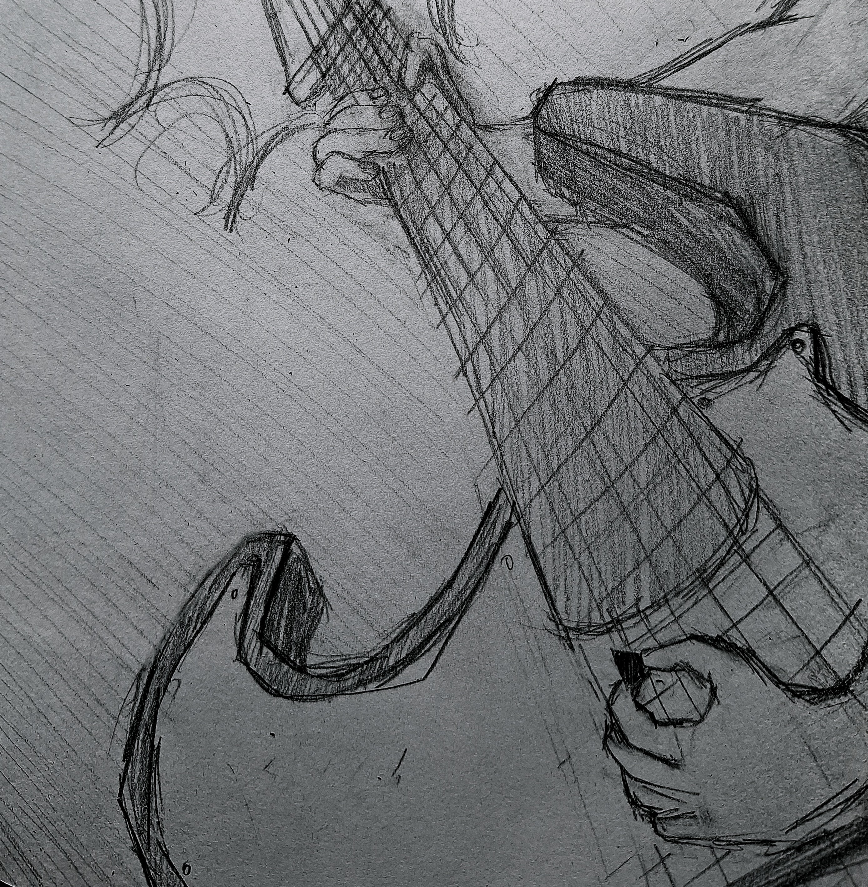

Orland Park, Il || z.azeem3105@gmail.com || Phone Number || LinkedIn
Information Technology and Management undergraduate with a minor in Game Design and Experiential Media, building a foundation in gameplay programming and interactive system design. Developing skills in software development, object-oriented programming, and user-centered design through academic and personal projects. Motivated to grow as a game developer by strengthening technical proficiency and creating efficient, immersive digital experiences.
Hawk Ambassador